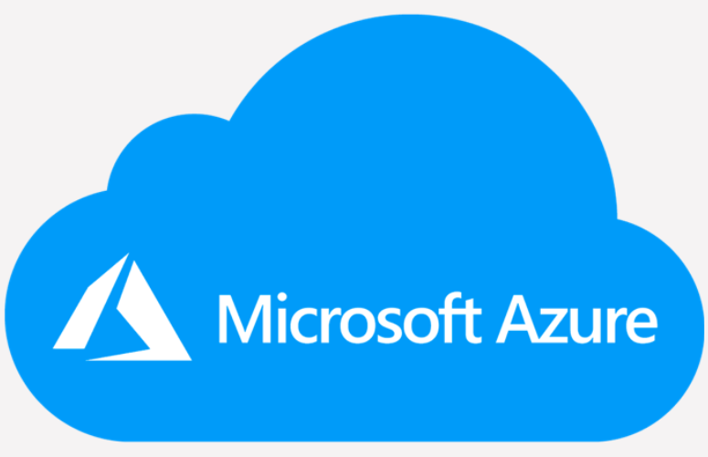
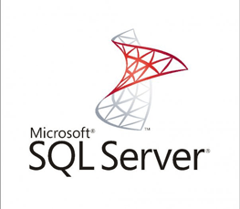

This course is for Azure Administrators. The Azure Administrator implements, manages, and monitors identity, governance, storage, compute, and virtual networks in a cloud environment.
This course teaches IT Professionals how to manage their Azure subscriptions, secure identities, administer the infrastructure, configure virtual networking, connect Azure and on-premises sites, manage network traffic, implement storage solutions, create and scale virtual machines, implement web apps and containers, back up and share data, and monitor your solution.
This course is for Azure Administrators. The Azure Administrator implements, manages, and monitors identity, governance, storage, compute, and virtual networks in a cloud environment. The Azure Administrator will provision, size, monitor, and adjust resources as appropriate.
In this module, you will learn how to secure identities with Azure Active Directory, and implement users and groups.
LessonsAfter completing this module, students will be able to:
In this module, you will learn about managing your subscriptions and accounts, implementing Azure policies, and using Role-Based Access Control.
LessonsAfter completing this module, students will be able to:
In this module, you will learn about the tools an Azure Administrator uses to manage their infrastructure. This includes the Azure Portal, Cloud Shell, Azure PowerShell, CLI, and Resource Manager Templates. This module includes:
LessonsAfter completing this module, students will be able to:
In this module, you will learn about basic virtual networking concepts like virtual networks and subnetting, IP addressing, network security groups, Azure Firewall, and Azure DNS.
LessonsAfter completing this module, students will be able to:
In this module, you will learn about intersite connectivity features including VNet Peering, Virtual Network Gateways, and Site-to-Site Connections.
LessonsAfter completing this module, students will be able to:
In this module, you will learn about network traffic strategies including network routing and service endpoints, Azure Load Balancer, Azure Application Gateway, and Traffic Manager.
LessonsAfter completing this module, students will be able to:
In this module, you will learn about basic storage features including storage accounts, blob storage, Azure files and File Sync, storage security, and storage tools.
LessonsAfter completing this module, students will be able to:
In this module, you will learn about Azure virtual machines including planning, creating, availability and extensions.
LessonsAfter completing this module, students will be able to:
In this module, you will learn administer serverless computing features like Azure App Service, Azure Container Instances, and Kubernetes.
LessonsAfter completing this module, students will be able to:
In this module, you will learn about backing up files and folders, and virtual machine backups.
LessonsAfter completing this module, students will be able to:
In this module, you will learn about monitoring your Azure infrastructure including Azure Monitor, alerting, and log analytics.
LessonsAfter completing this module, students will be able to:
| Related Course | |
|---|---|
|  Microsoft Azure Fundamentals (AZ900) |  Microsoft SQL Server |
Ojo Contact148, Olojo Drive High Taste B/Stop, EIIT/FCMB Building, Ojo, Lagos State. |
Satelite Town ContactNo 1 Community Road Abulado Satelite Town, Lagos State. |
Lekki ContactNo 9, Otunba Adedoyin Ogungbe Crescent, Opposite ELIM Motors LekkiPhase 1, Lagos State. |